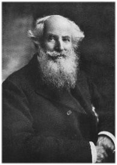

Sunday, May the 27th, 2012
back to: title, date or indexes
[F. J. Furnivall (1825–1910)] was… besides being a redoubtable scholar himself, one of the great rock-blasting entrepreneurs of Victorian scholarship, the kind of man who if his energies had taken another turn might have covered a continent with railways. As secretary of the Philological Society, he spent twenty years amassing materials for the New (Oxford) English Dictionary, of which he was one of the first editors; as founder of the Early English Texts Society, he performed an indispensable service for medievalists. Societies were his natural element. Apart from the E.E.T.S., he also founded the New Shakespere Society [he insisted on spelling it that way], the Ballad Society, the Chaucer Society, the Wycliffe Society, the Shelley Society, the Browning Society. It is a measure of his optimism that he even tried to start a Lydgate Society, though it failed to get off the ground…

There are times when it is impossible not to applaud his fighting spirit, or marvel at his vitality. Like the young Shakespeare, he was a lithe and active fellow; at the age of seventy he had enough surplus energy left to found the Hammersmith Sculling Club for Girls and Men, and he was still turning out with them on the river every Sunday at the age of eighty-five. He was also an ardent old-fashioned socialist, who refused to be bound by snobbish convention. It is characteristic that the memorial volume published after his death should have contained, along with contributions by scholars from all over the world, a simple tribute from a waitress in the ABC tea-shop in Oxford Street where he used to hold court.
from The Rise And Fall Of The Man Of Letters by John Gross (1969)